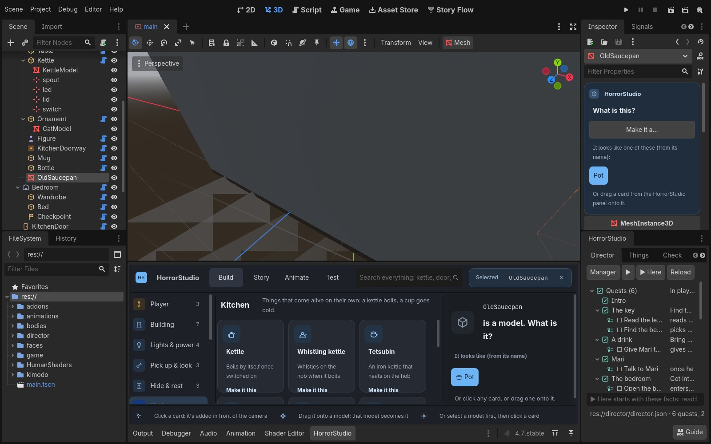
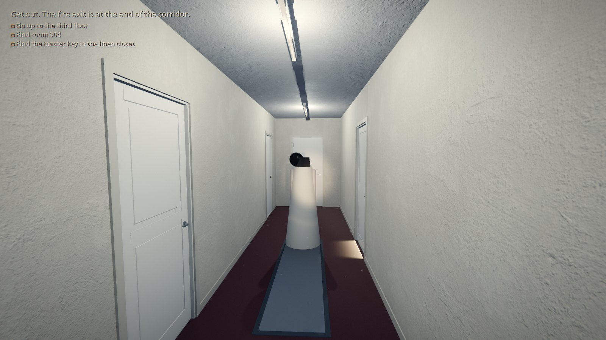
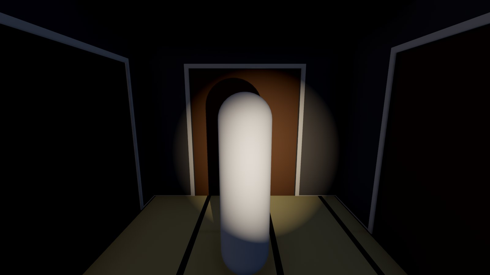
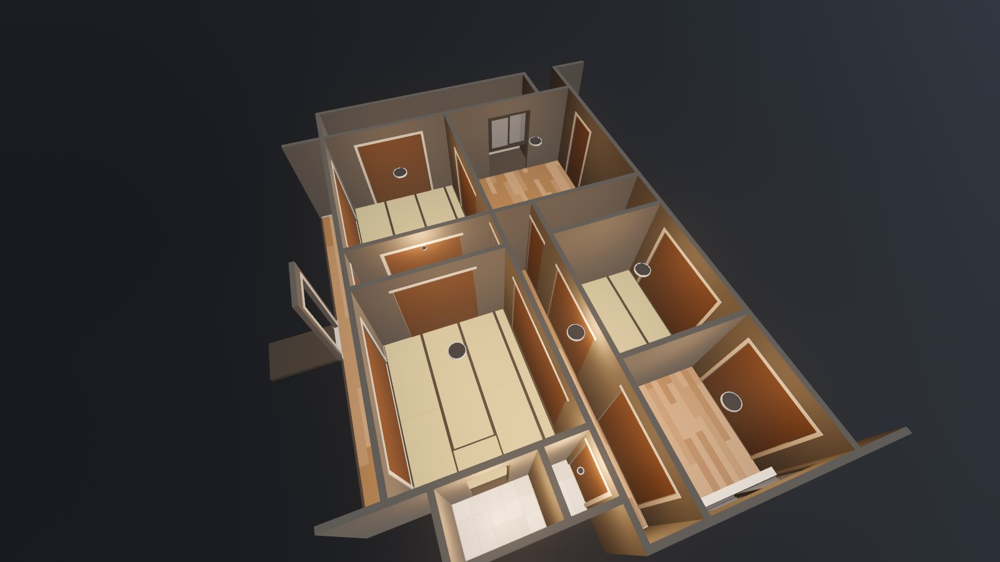
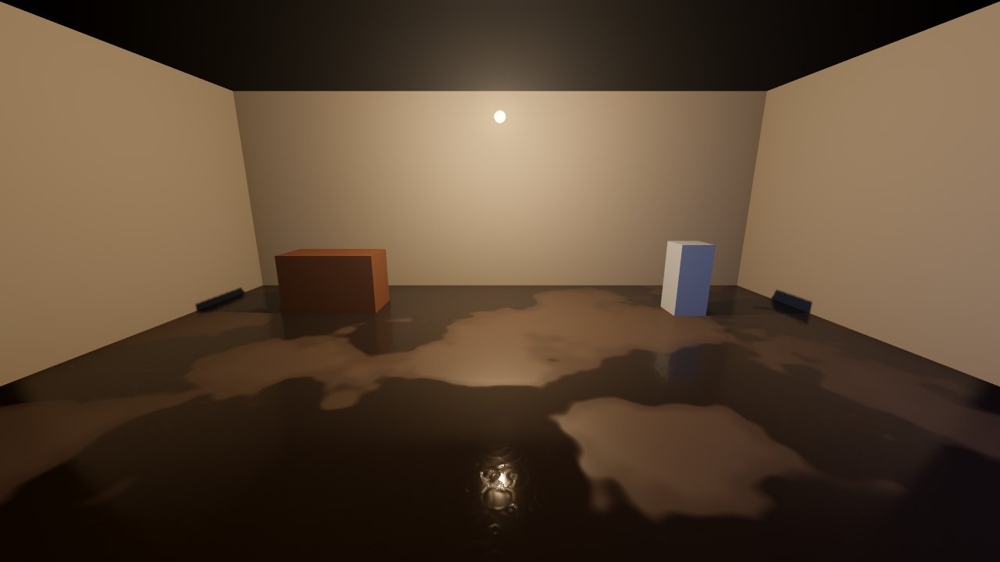
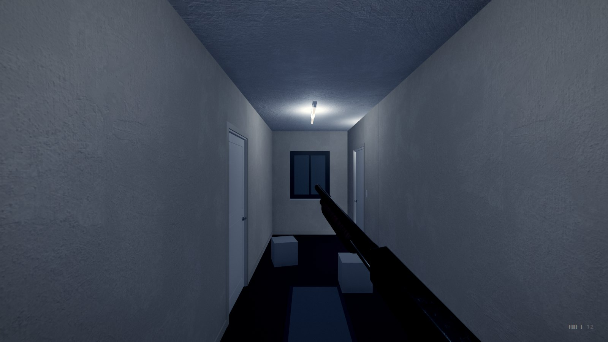
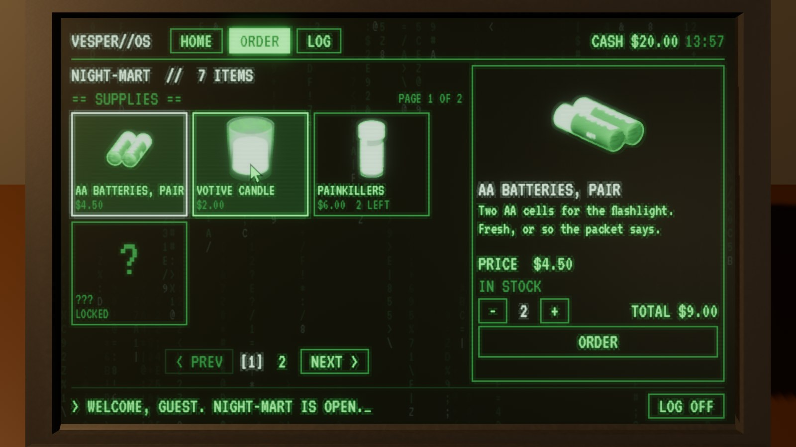
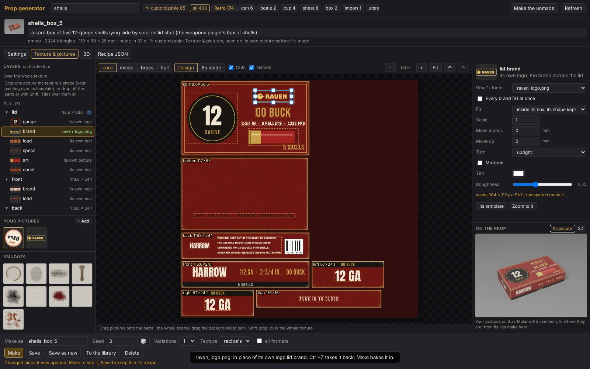
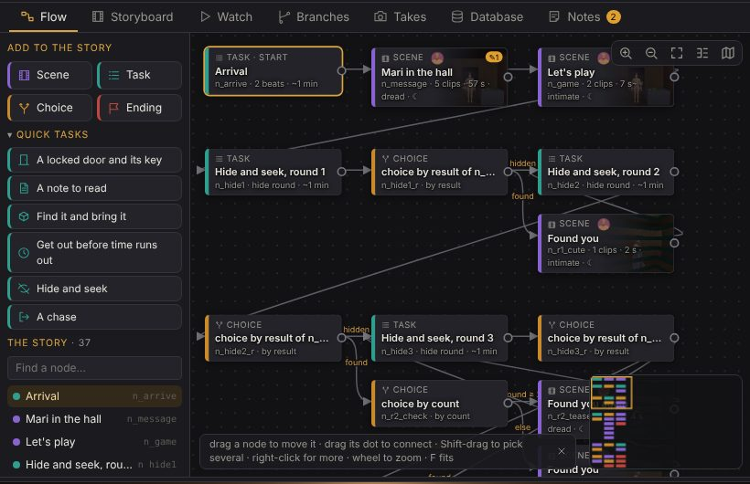

HorrorStudio guides
How to use the studio's tools, a page each, with pictures of the real thing. Open one in your browser; nothing needs a server unless it says so.

The Director in Godot
Build a game in Godot itself: rooms, doors, things and characters dragged in, the story as chapters, tasks, dialogue and endings, events for the scares (when, if, then), flags and where the player is, Kimodo motions there and back.

Tutorial v2: Room 304
A hotel's third floor modelled in the scene builder, then the whole game built by hand in Godot with the Look plugin and the starter kit: a to-do list, notes and keys, music by mood and room tones, lights that dim and die one by one, a flashlight on batteries, someone who hates the light, the hush before a jump scare.

Your first game, by hand
A house from the scene builder, a street from the street builder and a character from the Character Studio, exported for Godot and put together step by step: walk up the path, open the door, the lights die, she's there.

Godot by hand: setting up
A Godot project of your own for the studio's exports (Exports/interiors, streets,
characters): the settings, bringing them in, what's in each, lighting it, a player, shipping it.

The HorrorStudio Look plugin
The studio's look as nodes: the realism preset, flickering bulbs, window light, wet floors and rain, blood, mirrors, the character's skin, eyes and hair, a grade and a camcorder's tape. 40 ready-made presets.

The HorrorStudio Weapons plugin
Your double-barrelled shotgun held in first person, no hands: a barrel a click, broken open in front of you to load, its muzzle flashing your way, and what a 12-gauge leaves on a wall, close up and down a corridor. For a game built by hand.

The laptop (HorrorStudio Devices)
Your laptop on a desk: E and the view goes in to its screen, a green terminal used with the mouse. Its Order tab sells things for the player's cash a page at a time, each its own model, some locked (a ?) until a task's done, into the pocket or in a parcel left at the door to unbox with E. A prefab to drag in; a thing to sell is one small file.

The prop customizer
Your own pictures on the studio's props: a brand on a can, a cover on a book, a logo on a box of shells. Dragged onto its texture, seen on the prop's own picture before it's made, then made for Godot.

The director's desk
Plot, block and review a story in the browser: the board, the script, the stage, the Database, the playtest.
Also opened from the desk's Help (python tools/director/serve.py, then http://127.0.0.1:8780/guide.html).
An exported game's guide
Each Godot project the desk exports carries its own guide, about that game: opening and playing it, its
folders, lighting it, swapping props, building it for Windows and Linux, what a re-export touches. It's at
guide/index.html in the project
(Saved/Godot/<Game>_v001/, _v002...), and the desk serves it after its Godot button
exports one.
Which way to build
In Godot, with the Director: the game made right in Godot's editor, no desk in between. Start here for a new game you'll build and light in Godot.
On the desk, then exported: the story plotted, blocked and reviewed in the browser, then exported to Godot as a project of its own. The desk's guide and the export's guide cover that way.
In Godot, by hand: the studio's editors make the pieces (rooms, streets, people), their
Export for Godot buttons put them in Exports/, and you build the game yourself in a project of
your own. Godot by hand, your first game and Tutorial v2 cover that way; the Look plugin's guide fits all three.